Find vulnerabilities
before attackers do.
Manual penetration testing for web, API, mobile, network and cloud. You get a report engineering can act on the same day — every finding reproduced, rated and paired with a fix.
[+] Fixed-scope quote in 24h [+] Free retest included [+] NDA on request
Start an assessment
Pick how you want to kick things off. Every route ends in the same place: a scoping call, a fixed quote, and a signed statement of work.
mail -s "VAPT request" hello@vapt-security.com
What is a VAPT?
A Vulnerability Assessment finds what is weak. A Penetration Test proves what an attacker can actually do with it. We run both against the same scope, so you never have to guess whether a scanner hit is real — if it is in the report, we exploited it and kept the evidence.
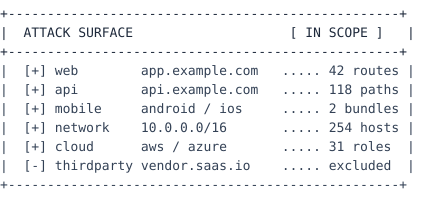
What we test
[+] Web applications
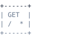
Business-logic abuse, injection, session handling and access control tested by hand against every authenticated role.
[x] stored + reflected xss
[x] csrf and idor
[x] authn / authz bypass
[+] APIs
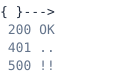
Every documented path plus the ones that are not documented. We diff your spec against what the service actually answers.
[x] jwt and oauth flaws
[x] rate limiting and quotas
[x] mass assignment
[+] Mobile apps
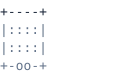
Static and dynamic analysis on real devices, including the backend the app talks to — most mobile findings live server-side.
[x] certificate pinning bypass
[x] hardcoded secrets
[x] deep-link abuse
[+] Network
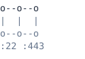
Discovery, enumeration and exploitation across your perimeter and, where authorised, lateral movement from an assumed-breach foothold.
[x] default and reused creds
[x] patch and config drift
[x] segmentation checks
[+] Cloud
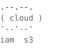
IAM paths, storage exposure and network posture reviewed against the provider benchmark, then tested rather than assumed.
[x] public buckets and snapshots
[x] key and secret handling
[x] privilege-escalation paths
[+] Compliance
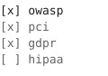
Findings mapped to the control set your auditor asks about, with the artefacts they need attached to each one.
[x] pci-dss 11.3
[x] gdpr art. 32
[x] hipaa security rule
How an engagement runs
Eight phases, roughly eight working days for a mid-size application. You get a channel with the testers from day one, not a report at the end.
Targets, roles, rules of engagement and out-of-scope assets agreed in writing.
day 1Mapping routes, endpoints, hosts and the trust boundaries between them.
day 2Automated coverage sweep to establish a baseline, tuned to your stack.
day 3The part that matters — business logic, chained flaws, authorisation depth.
day 4–6Proof-of-concept for every claimed finding. No theoretical severities.
day 6False positives stripped out before anything reaches your inbox.
day 7Executive summary, technical detail, reproduction steps and a fix per issue.
day 8Once you have shipped fixes we re-run the whole set. Included, not billed.
+30 days
Track record
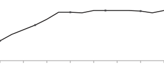
Fig 1. 500+ applications tested
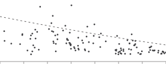
Fig 2. 2,500+ findings reported
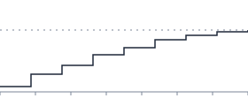
Fig 3. 99.5% retest pass rate
What a report looks like
The numbers below are the median distribution across our last hundred web engagements. Yours will differ — the shape rarely does.
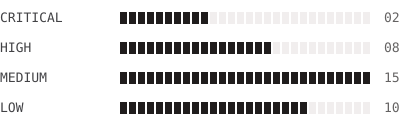
Why teams pick us
From the teams we tested
“The IDOR they found on our invoice API had been live for fourteen months. The write-up was clear enough that we shipped the fix before the report call.”
“Our auditor accepted the report as-is. That has never happened with a pentest vendor before.”
“Zero padding. Thirty-five findings, thirty-five proof-of-concepts, one retest, done.”
FAQ
Ready to see what an attacker sees?
Send us a scope and we will come back within 24 hours with a fixed quote, a timeline and the testers who will be on it.
Get in touch
Tell us what you want tested and by when. If VAPT is not the right answer for your problem, we will say so.